WebYep ist ein "Web Content Management System" - es ermöglicht also das Bearbeiten von Inhalten einer Website durch Personen ohne WebDesign-Wissen (direkt im Webbrowser). Jede Person, die mit einem Webbrowser umgehen kann, ist in der Lage mittels WebYep Inhalte von Webseiten zu verändern.
Damit dies möglich wird, obliegt es Ihnen als WebDesignerIn, WebYep in die gewünschten Seiten einer Website einzufügen und in der Website zu installieren.
Ein wichtiger Unterschied zu anderen Web Content Management Systemen ist, dass Sie nicht Ihre gesamte Website mit WebYep erstellen müssen. Es genügt, in einzelnen Seiten, deren Inhalt künftig häufiger geändert werden soll, die statischen Teile (Texte, Bilder) durch WebYep Elemente zu ersetzen.
Die vorliegende Dokumentation beinhaltet alle Informationen die Sie benötigen, um WebYep in eine von Ihnen erstellte Website zu integrieren.
WebYep im Einsatz
Um zu sehen, wie WebYep nach der Integration in eine Webseite für die BenutzerInnen zu bedienen ist (wie also die Texte eingegeben bzw. Bilder hinaufgeladen werden), verwenden Sie bitte die WebYep Online Demo.
Wichtig: Diese Dokumentation bezieht sich zum Teil auf das Arbeiten mit der WebYep Erweiterung in Adobe® Dreamweaver®.
Die vorliegende Dokumentation beruht auf der Dreamweaver Version MX 2004,
wenngleich die WebYep Dreamweaver® Extension auch mit anderen Versionen
von Dreamweaver funktionsfähig ist (siehe Systemvoraussetzungen).
Sie verwenden nicht Dreamweaver?
Im Kapitel Referenz werden alle WebYep Elemente auch mit dem zugehörigen PHP Code Fragment erläutert, damit Sie diese auch mit jedem beliebigen Webseiten Editor, der das Einfügen von PHP Code erlaubt, einfügen und konfigurieren können.
Prinzip
Im Prinzip geht es bei Web Content Management Systemen darum, Teile einer Webseite für BernutzerInnen direkt im Webbrowser editierbar zu machen. Sie als WebDesignerIn können dies den BenutzerInnen ermöglichen, indem Sie WebYep in die betreffende Website integrieren und WebYep-Elemente in die betreffenden Webseiten einbauen.
Website vorbereiten:
Wenn Sie Dreamweaver verwenden, die WebYep Dreamweaver
Extension installieren: Doppelklick auf webyep.mxp, weiter laut dem
dadurch gestarteten
Extension
Manager
Den webyep-system Ordner in das Stammverzeichnis der Website kopieren (wo auch die Startseite - index.html - liegt)
In der Datei konfiguration.php Benutzername und Kennwort definieren (schalten Sie ggf. im Dreamweaver auf die Code-Ansicht – diese Datei besteht nur aus PHP Code)
Den webyep-system Ordner zum Server hinaufladen (per FTP)
Eine normale HTML-Seite erstellen, aber als Dateiendung nicht ".html" sondern ".php" verwenden.
Normale (statische) Inhalte einfügen um die Seite zu gestalten.
Wo immer Text oder Bilder editierbar sein sollen, stattdessen das entsprechende WebYep-Element in die Seite einfügen.
Im Dreamweaver
können Sie dazu aus der Objektpalette unter "WebYep" das gewünschte WebYep Element auswählen. In anderen Editoren setzen Sie den entprechenden PHP Code von Hand ein – siehe dazu die Referenzen der einzelnen WebYep Elemente, vor allem auch für den "Init Code") .
Irgendwo in der Seite auch einen WebYep-Anmeldeknopf einfügen.
Im Dreamweaver wird die Aktivierung in der Remote-Ansicht des Dateifensters durch rechten Klick auf den webyep-system Ordner und Anwählen des Menüpunktes "WebYep aktivieren" durchgeführt. Details und Infos zur Aktivierung mittels anderer Programme finden Sie unter "Aktivierung, Technische Details" und "Installation"
Was sind die WebYep-Elemente?
Die WebYep-Elemente sind kleine PHP-Code-Fragmente die in den HTML-Code
eingebettet werden. Im Dreamweaver werden diese Elemente über
die Objektpalette (Kategorie "WebYep") eingefügt. Aber Sie können auch in jedem anderen WebSeiten-Editor die entsprechenden PHP-Code-Fragmente manuell einfügen – Details dazu finden Sie in den Referenzen der einzelnen WebYep Elemente.
Aufbau des webyep-system Ordners
webyep-system
konfiguration.php (hier wird Benutzername und Passwort konfiguriert)
info.php (zeigt Systeminformationen an)
programm beinhaltet alle WebYep Programmdateien
daten
(beinhaltet alle WebYep Daten)
documents (Liste der WebYep-Seiten)
license (Lizenzcodes)
... diverse Dateien, die die eingegebenen Texte, Bilder,
etc. beinhalten
Der "daten" Ordner beinhaltet alle von den Benutzern eingegebenen Daten und sollte daher von Zeit zu Zeit gesichert werden (siehe "Backup").
Installation
WebYep-Dreamweaver-Erweiterung
Wenn Sie zur Erstellung Ihrer Webseiten Adobe® Dreamweaver® verwenden, so können
Sie die WebYep-Dreamweaver-Erweiterung nutzen.
Die WebYep-Dreamweaver-Erweiterung ist in der Datei "webyep.mxp" enthalten und wird installiert, indem Sie diese Datei einfach doppelklicken - dies startet den "Extension Manager" - folgen Sie dessen Anweisungen um die Erweiterung zu installieren.
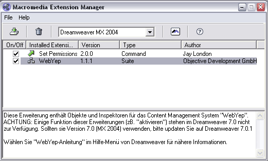 Der Extension Manager mit installierter WebYep-Dreamweaver-Erweiterung
Hinweis: Sollten Sie mehrere Adobe® Programme installiert haben, so können Sie die WebYep-Erweiterung von einem (zB. Dreamweaver Ultradev) zum anderen (zB. Dreamweaver) im Extension Manager durch den Menüpunkt "Datei / Erweiterung importieren..." übertragen.
Der webyep-system Ordner
Die Haupt-Komponente von WebYep besteht aus einer Reihe von Programmdateien
die in einem Ordner namens "webyep-system" zusammengefasst
sind. Dieser webyep-system Ordner wird zu den anderen Dateien
Ihrer Website gelegt, am besten in das Stammverzeichnis (wo
auch die Startseite Ihrer Website - meist "index.html" bzw.
"index.php" genannt - liegt).
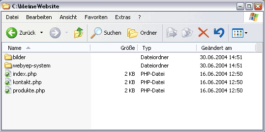 Der webyep-system Ordner im Stammverzeichnis einer Website
Bevor Sie WebYep am Webserver installieren, sollten Sie noch die nötige
Konfigurationseinstellung vornehmen: Wenn die BenutzerInnen der Website Änderungen
an einer Seite vornehmen wollen, müssen diese sich per Name
und Kennwort identifizieren (nach Klick auf das Schloss-Symbol
in der Seite). Dieser Name und das Kennwort sind die einzigen Konfigurationseinstellungen,
die vorzunehmen sind:
Öffnen Sie die Datei "konfiguration.php" im webyep-system Ordner.
Schalten Sie auf die Quelltextansicht um - diese Datei ist keine HTML-Datei sondern eine Textdatei.
Tragen Sie innerhalb der Anführungszeichen die gewünschten Werte für webyep_sAdminName und webyep_sAdminPassword ein - diese können von Ihnen frei gewählt werden!
Zum Beispiel:
// Name und Kennwort für den "Bearbeiten"-Modus.
// Diese können von Ihnen frei gewählt werden und müssen von den
// EditorInnen der Website beim Anmelden (Klick auf das Schloss-Symbol) angegeben
// werden, um die Seiten bearbeiten zu dürfen.
$webyep_sAdminName = "admin";
$webyep_sAdminPassword = "test";
Zeichenkodierungen
Weiters können Sie mit der Konfigurationsvariable $webyep_sCharset die verwendete Zeichenkodierung (Character Set) einstellen. Dies ist immer dann erforderlich, wenn sie eine andere Kodierung als ISO Latin 1 (iso-8859-1) verwenden.
Unabhängig von WebYep ist beim Gestalten Ihrer Webseiten dann aber auch zu beachten, dass Sie in die Seiten die korrekten
Meta-Tags für
die Zeichenkodierung (content-type, charset)
einfügen!
Um WebYep auf dem Webserver zu installieren, ist der webyep-system Ordner einfach mit den restlichen Dateien Ihrer Website auf den Server zu übertragen ("upload"). Sie können dies mit jedem beliebigen FTP oder SCP Programm durchführen oder direkt im Dreamweaver, im Sitefenster, mittels "Datei(en) bereitstellen".
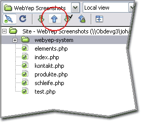 Der webyep-system Ordner wird mit den anderen Dateien der Website auf den Server überspielt
Damit WebYep die von den BenutzerInnen eingegebenen Daten speichern kann, benötigt es die Berechtigung, Dateien auf dem Server zu speichern. Daher muss WebYep "aktiviert" werden.
Nähere Details und Informationen zur Aktivierung mittels anderer Programme als Dreamweaver finden Sie unter "Aktivierung, Technische Details".
Um die Aktivierung mit Dreamweaver durchzuführen, klicken Sie mit der rechten
Maustaste auf den webyep-system Ordner in der Liste der
Server-Dateien und wählen im erscheinenden Kontextmenü den
Menüpunkt "WebYep aktivieren".
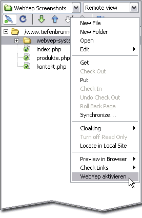 Die Liste der Dateien auf dem Webserver.
In dieser Liste mit der rechten Maustaste auf den webyep-system Ordner
klicken
und im erscheinenden Menü "WebYep aktivieren" wählen.
Ob Sie WebYep am Server korrekt installiert und aktiviert haben, können
Sie durch Aufrufen folgenden URLs überprüfen:
Die Dreamweaver-Erweiterung:
Eine Datei namens "webyep.mxp" - sie enthält die Eingabemasken,
Eigenschaftsfenster, etc. für Dreamweaver®. Die Erweiterung ist durch Doppelklick auf diese Datei (startet den "Extension Manager") zu installieren.
Der webyep-system Ordner:
Ein Ordner namens "webyep-system" u.a. mit diversen Programmdateien (PHP-Dateien).
Diesen Ordner in das Stammverzeichnis Ihrer Website kopieren.
Konfiguration:
Name und Kennwort in der Datei "konfiguration.php" einstellen.
Installation am Server:
Den webyep-system Ordner (Ordner namens "webyep-system") mit den anderen Dateien der Website auf den Server überspielen.
Aktivierung:
Im Dreamweaver: Klick mit rechter Maustaste auf den webyep-system Ordner in der Liste der
Dateien am Server – Kontext-Menü-Punkt "WebYep aktivieren" wählen. Oder mit einem beliebigen FTP/SCP Programm nach dem Upload die Zugriffsrechte des Ordners "daten" im webyep-system Ordner entsprechend setzen.
Überprüfung:
Sie können die Installation am Server mit dem URL
http://www.meinewebsite.com/webyep-system/info.php überprüfen.
Aktivierung, Technische Details
Technisch gesehen werden bei der Aktivierung die Unix-Datei-Rechte für einen bestimmen Unterordner des webyep-system Ordners (namens "daten") gesetzt und zwar auf den Wert "schreiben, lesen und ausführen erlauben für: alle" - dies entspricht dem Unix Modus "0777".
Warnung: Eine unsichere PHP Konfiguration durch den Provider kann dazu führen, dass PHP Skripts in anderen Websites dieses Providers oder Anfreifer von außen auf die WebYep-Daten Ihrer Website zugreifen können. Dies gilt nicht nur für WebYep sondern für alle PHP Skripts Ihrer Website! Informieren Sie sich ggf. bei Ihrem Provider, ob die PHP Engine Ihres Webspaces sicher konfiguriert ist (durch entsprechende Einstellung von "open_base_dir" und Abschalten von "register_globals" und "allow_url_fopen").
Um WebYep ohne Dreamweaver zu "aktivieren", müssen also die Zugriffsrechte das "daten" Ordners innerhalb des webyep-system Ordners am Server entsprechend gesetzt werden.
Hier als Beispiel die Vorgehensweise bei Verwendung des Programms "CyberDuck" zum FTP Transfer:
Klicken Sie sich zum "daten" Ordner im webyep-system Ordner durch. Klicken Sie diesen dann mit der rechten Maustaste an (bzw. bei gehaltener Strg Taste) und wählen Sie aus dem erscheinenden Menü "Info".
Im erscheinenden Fenster können Sie nun die Zugriffsrechte setzen – klicken Sie danach auf "Anwenden".
Backup (Datensicherung)
Die Texte und Bilder etc., die von den EditorInnen in die Web-Seiten
eingegeben werden, speichert WebYep in Form mehrerer Dateien am Webserver
im webyep-system Ordner. Auch wenn der Provider Ihre Website in regelmäßigen
Abständen Sicherungskopien erstellen sollte, kann es nicht schaden,
ab und zu selbst eine Sicherungskopie der Daten zu erstellen.
Wo speichert WebYep die Daten?
Wenn Sie im Dreamweaver eine FTP-Verbindung zum Webserver herstellen und einen Blick in den webyep-system Ordner am Server (nicht den auf Ihrem PC/Mac) werfen, finden Sie darin einen Unterordner namens "daten". In diesem Unterordner speichert WebYep sämtliche von den BenutzterInnen/EditorInnen der Website eingegeben Daten.
Zum Sichern der Daten müssen Sie lediglich diesen Ordner (samt Inhalt) vom Server auf Ihren PC/Mac übertragen.
Wie spiele ich die gesicherten Daten wieder zurück?
Sollten die Daten am Server einmal wirklich wiederhergestellt werden
müssen, gehen Sie folgendermaßen
vor:
Löschen Sie den gesamten webyep-system Ordner am Server, wenn er dort noch existiert. Wenn Daten am Server verloren gegangen sind, ist es relativ wahrscheinlich, dass WebYep dabei ebenfalls beschädigt wurde.
Ersetzen Sie den "daten"-Ordner am Server (im webyep-system Ordner) durch Ihre Sicherungskopie (löschen Sie den "daten"-Ordner am Server und übertragen sie stattdessen Ihre Kopie an diese Stelle)
Ggf. müssen Sie beim ersten Aufruf der Website dann den Lizenzcode
erneut eingeben.
Achten Sie dabei darauf, dass Sie die richtige Version von WebYep installieren - nicht alle Versionen von WebYep sind "datenkompatibel". Sie können die installierte WebYep Version durch Aufrufen der Seite http://www.meinewebsite.com/webyep-system/info.php überprüfen.
Systemvoraussetzungen
Um WebYep in Ihre Website zu integrieren, benötigen Sie keine
zusätzlichen Werkzeuge - die Programme mit denen Sie üblicherweise
Webseiten erzeugen, reichen aus, um WebYep in Ihre Seiten einzubinden.
Für den HTML-Editor Dreamweaver® (ab Version MX) der Firma Adobe® steht allerdings eine Erweiterung (Extension) bereit, mit der es besonders einfach ist, WebYep in Ihre Webseiten zu integrieren. Mit Dreamweaver und der WebYep-Dreamweaver-Erweiterung ist die Integration von WebYep in eine Seite ebenso einfach wie das Einfügen eines herkömmlichen Bildes.
Wenn Sie Dreamweaver MX 2004 (= 7.0.0) verwenden, müssen Sie das kostenlose Update auf 7.0.1 installieren, um die WebYep-Dreamweaver-Erweiterung verwenden zu können (dies wäre aber ohnehin ratsam).
Damit WebYep in Ihrer Website funktionieren kann, muss der Webspace-
bzw. Internetprovider, bei dem Ihre Website deponiert ist, lediglich
die Ausführung
von PHP-Skripten (PHP ab Version 4.1) ermöglichen. Eine Datenbank (wie
zB. MySQL) ist für den Betrieb von WebYep nicht erforderlich!
Zusammenfassung:
Systemvoraussetzungen am eigenen PC/Mac:
Keine
Wenn Sie Dreamweaver® (mind. Version MX) unter Windows oder MacOS verwenden, können
Sie die Dreamweaver-WebYep-Erweiterung einsetzen.
Systemvoraussetzungen beim Webspace/Internet-Provider:
Ausführung von PHP-Skripten (mind. PHP Version 4.1)
Es muss sich um eine vollwertige, dem Stand der Technik entsprechende
PHP-Unterstützung handeln.
WebServer unter Windows werden grundsätzlich unterstützt,
sind aber oft problematisch.
Es muss möglich sein, PHP Datei-Schreibrechte auf
einen bestimmten Ordner zu geben.
Keine Datenbank erforderlich!
Eigenes Logo (white label)
Sie können, die entsprechende WebYep-Lizenz vorausgesetzt, WebYep als Ihr eigenes Produkt darstellen, mit eigener Produktbezeichnung und eigenem Logo.
Normalerweise ist es zwar erlaubt, grafische Bestandteile von WebYep (wie Grafiken und das Stylesheet) abzuändern, um WebYep optisch an eine eigene Website anzupassen. Das Ändern des WebYep Logos und entfernen der Hinweise auf den Hersteller (Objective Development Software GmbH) ist aber nicht erlaubt.
Durch Erwerben einer WebYep-Lizenz mit "white label" Option, erwerben Sie das Recht für eine bestimmte Domain (Website), auch diese Änderungen an WebYep vorzunehmen. Sie erhalten dann einen speziellen Lizenzcode, mit dem diese Option in WebYep freigeschalten wird.
Wie wird WebYep zu Ihrem eigenen Produkt?
Um WebYep nun als eigenes Produkt mit Ihrer eigenen Corporate Identity bzw. Ihrem Corporate Design zu versehen, können Sie folgende Änderungen vornehmen:
WebYep Logo
Ändern Sie das WebYep Logo: Die Datei logo.gif im Unterordner "programm/images" des webyep-system Ordners.
Bedienelemente, Knöpfe, etc.
Im Unterordner "programm/images" des webyep-system Ordners finden Sie auch diverse andere Grafiken, die Sie an Ihr Design anpassen können.
Schriftarten, Farben, etc.
Im Unterordner "programm" des webyep-system Ordners finden Sie die Datei styles.css, in der alle CSS Stildefinitionen von WebYep enthalten sind. Hier können Sie Schriftarten, Farben etc. anpassen.
Produktname
Um den Produktnamen anzupassen, öffnen Sie die Konfigurationdatei konfiguration.php im webyep-system Ordner. Dort finden Sie den Eintrag
$webyep_sProductName = 'MyProduct';
Ändern Sie den Text zwischen den einfachen Anführungszeichen (') entprechend ab. Achten Sie darauf, die umschließenden einfachen Anführungszeichen intakt zu lassen und im Text keine solchen Zeichen zu verwenden!
Um Ihr modifiziertes WebYep System zu verwenden, benötigen Sie eine WebYep Lizenz mit White Label Option fuer den Hostnamen (Domain, URL), auf dem das System laufen soll.
Zu Testzwecken und während der Entwicklung der Website, wird WebYep ueblicherweise mit einem lokalen Web-Server (auf Ihrem Arbeitsplatz-Rechner oder einem Server in Ihrem lokalen Netzwerk) betrieben. Wenn dieser Web-Server vom Internet aus nicht zugänglich ist (eine lokale IP-Adresse hat), benöten Sie fuer den Betrieb der modifizierten WebYep Version keine Lizenz mit White Label Option.
Wenn Sie aber Ihr modifiziertes WebYep System auf einem öffentlichen Web-Server installieren, muessen Sie auch eine WebYep Lizenz mit White Label Option installieren, die zu dem Hostnamen passt, unter dem die Website angesprochen wird.
Tutorials
Tutorials
Hier finden Sie einige Anwendungsbeispiele von WebYep, anhand derer
Sie Sich mit dem Einsatz von WebYep vertraut machen können.
Die Tutorials gehen von der Verwendung von WebYep mittels Dreamweaver
und der WebYep
Dreamweaver Extension aus. Im Prinzip können Sie die Tutorials
aber auch nachvollziehen, wenn Sie die WebYep-Elemente von Hand in den
HTML-Code
platzieren.
Wichtige Hinweise zum Dreamweaver:
Objektpalette:
In der WebYep-Objektpalette finden Sie alle WebYep-Elemente, um Sie
in die Seite einzufügen:
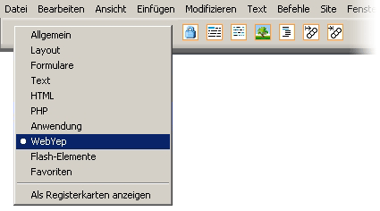
Alle unsichtbaren Elemente einblenden
Da die WebYep-Elemente aus kleinen PHP-Code-Fragmenten bestehen, können Sie sie sichtbar machen, in dem Sie die unsichtbaren Elemente einblenden:
Im Menü "Bearbeiten", Menüpunkt "Voreinstellungen...",
Kategorie "Unsichtbare Elemente" sollten Sie bei allen Elementen das
Häkchen setzen.
Die WebYep-Elemente sollten in den Dokumenten im Dreamweaver dann ca. so aussehen:
Sie können mit "Ansicht" / "Visuelle Hilfsmittel"
/ "Alle ausblenden" die WebYep-Elemente ein- und ausblenden.
Um die Einfügemarke im Dreamweaver exakt zu positionieren, dient
der am unteren Fensterrand befindliche "Tag-Selektor".
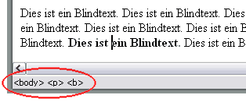
Durch Klicken auf einen im Tag-Selektor gelisteten Tag wird dieser gesamte
Tag im Dokument selektiert. Drücken Sie danach die "Pfeil-Links"- oder "Pfeil-Rechts"-Taste
(cursor left/right) auf der Tastatur, dann wird die Einfügemarke exakt vor
bzw. nach diesen Tag gesetzt!
Zuweisen von CSS Stilen
Mit dem Tag-Selektor können einzelnen Tags auch CSS Stile gezielt zugeordnet werden:
Setzen Sie dazu die Einfügemarke in den Bereich, dem Sie einen Stil zuweisen möchten. Im Tag-Selektor werden daraufhin alle beteiligten Tags gelistet.
Klicken Sie nun im Tag-Selektor mit der rechten Maustaste auf
den gewünschten Tag und wählen Sie im erscheinenden Kontext-Menü unter "Klasse
einrichten" den
gewünschten Stil.
In diesem Tutorial lernen Sie die grundlegenden WebYep-Elemente kennen,
wenden Sie in einer Beispielseite an und installieren diese am Webserver.
Verwenden Sie für dieses Tutorial eine WebSite in der Sie WebYep
installiert haben.
Anlegen der Seite, Einfügen der Elemente
1. Erstellen Sie eine neue Seite "wy-test.php"
2. Fügen Sie drei leere Absätze ein.
3. Setzen Sie die Einfügemarke in die erste Zeile.
4. Klicken Sie in der Dreamweaver Objektpalette (Kategorie "WebYep")
das WebYep Kurztext-Element (zweites von links) und fügen Sie es so in
die Seite ein.
5. Setzen Sie die Einfügemarke in die zweite Zeile.
6. Fügen Sie direkt nacheinander aus der Objektpalette erst ein WebYep
Bild-Element (viertes von links) und dann ein Text-Element (drittes von
links) ein.
7. Setzen Sie die Einfügemarke in die dritte Zeile.
8. Fügen Sie aus der Objektpalette einen WebYep Anmeldeknopf ein.
In der Seite sollten nun vier WebYep-Elemente in Form kleiner gelber
Icons sichtbar sein (stellen Sie sicher, dass Sie die "Unsichtbaren
Elemente"
alle eingeblendet haben - siehe Einleitung):
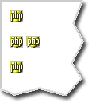
Konfigurieren der Elemente
1. Klicken Sie auf das WebYep-Element in der ersten Zeile, den
Kurztext.
2. Im Eigenschaftsfenster (Inspector) erscheinen die Eigenschaften des
Kurztext-Elementes (siehe Referenz).
3. Geben Sie im Eigenschaftsfenster als Feldname "Titel" ein.
4. Klicken Sie auf das erste WebYep-Element in der zweiten Zeile, das
Bild-Element.
5. Geben Sie als Bildname "Foto" ein. Geben als HTML-Attribute folgendes
ein:
align="left" hspace="20"
6. Klicken Sie auf das zweite WebYep-Element in der zweiten Zeile, das
Text-Element.
7. Geben Sie als Feldname "Text" ein.
Stellen Sie sicher, dass Sie den webyep-system Ordner auch zum WebServer
übertragen und WebYep aktiviert haben (siehe "Installation").
1. Überspielen Sie die Seite auf den WebServer (Upload per FTP).
2. Rufen Sie die Seite im WebBrowser auf, indem Sie den entsprechenden
URL eingeben - z.B:
http://www.meinewebsite.com/wy-test.php
3. Klicken Sie auf das Schloss-Symbol (den WebYep-Anmeldeknopf).
4. Geben Sie im erscheinenden Fenster den Benutzernamen und das
Kennwort ein, dass Sie bei der Installation von WebYep in der Datei konfiguration.php
(im webyep-system Ordner) angegeben haben - von Haus aus lautet der Benutzername
"admin" und das Kennwort ist leer.
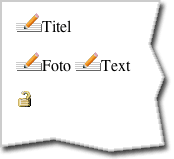
5. Klicken Sie auf die erscheinenden Bleistift-Symbole (die Editieren-Knöpfe),
um die Inhalte zu bearbeiten.
In diesem Tutorial lernen Sie den Umgang mit dem WebYep Menü-Element.
Verwenden Sie für dieses Tutorial eine WebSite, in der Sie WebYep
installiert haben!
Anlegen der Seite, Einfügen der Elemente
1. Erstellen Sie eine neue Seite "wy-menue.php". Arbeiten
Sie nicht in einem unbenannten Dokument - speichern Sie die Datei wirklich
gleich unter dem Namen "wy-menue.php".
2. Fügen Sie zwei leere Absätze ein.
3. Setzen Sie die Einfügemarke in die erste Zeile.
4. Fügen Sie aus der Objektpalette (Kategorie "WebYep") einen WebYep Anmeldeknopf ein.
5. Setzen Sie die Einfügemarke in die zweite Zeile.
6. Fügen Sie eine Tabelle ein, bestehend aus einer Zeile und zwei Spalten mit 10 Pixel Zellauffüllung.
Ihre Seite sollte nun ca. so aussehen (stellen Sie sicher, dass Sie die "Unsichtbaren Elemente" alle eingeblendet haben - siehe Einleitung):
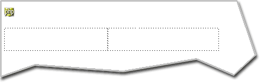
7. Setzen Sie die Einfügemarke in die linke Spalte der Tabelle.
8. Fügen Sie aus der Objektpalette (Kategorie "WebYep") ein WebYep Menü-Element (fünftes von links) ein.
9. Setzen Sie die Einfügemarke in die rechte Spalte der Tabelle.
10. Fügen Sie zwei leere Absätze ein.
11. Setzen Sie die Einfügemarke in die erste dieser Zeilen.
12. Stellen Sie im Eigenschaftsfenster als Absatzformat "Überschrift 3" ein.
13. Fügen Sie aus der Objektpalette ein WebYep Kurztext-Element (zweites von links) ein.
14. Setzen Sie die Einfügemarke in die zweite Zeile der rechten Tabellenspalte.
15. Fügen Sie aus der Objektpalette ein WebYep Text-Element (drittes von links) ein.
Ihre Seite sollte nun ca. so aussehen:
Konfigurieren der Elemente
1. Klicken Sie auf das WebYep Element in der linken Tabellenspalte (das Menü-Element)
2. Geben Sie im Eigenschaftsfenster als Menüname "Produkte" ein. Unter "Seite (URL)" sollte "wy-menue.php" stehen.
3. Klicken Sie auf das obere WebYep Element in der rechten Tabellenspalte (das Kurztext-Element).
4. Geben Sie im Eigenschaftsfenster als Feldnamen "Titel" ein.
5. Klicken Sie auf das untere WebYep Element in der rechten Tabellenspalte (das Text-Element).
6. Geben Sie als Feldnamen "Text" ein.
Testen der Seite
Stellen Sie sicher, dass Sie den webyep-system Ordner auch zum WebServer übertragen und WebYep aktiviert haben (siehe "Installation").
1. Überspielen Sie die Seite auf den WebServer (Upload per FTP).
2. Rufen Sie die Seite im WebBrowser auf, indem Sie den entsprechenden URL eingeben - z.B:
http://www.meinewebsite.com/wy-menue.php
3. Klicken Sie auf das Schloss-Symbol (den WebYep-Anmeldeknopf).
4. Geben Sie im erscheinenden Fenster den Benutzernamen und das Kennwort ein, dass Sie bei der Installation von WebYep in der Datei konfiguration.php (im webyep-system Ordner) angegeben haben - von Haus aus lautet der Benutzername "admin" und das Kennwort ist leer.
5. Klicken Sie auf das erscheinende Bleistift-Symbol (den Editieren-Knopf) neben dem Wort "Produkte", um das Menü zu bearbeiten.
6. Es erscheint das Menü-Editor-Fenster (siehe "Referenz / Menü")
7. Legen Sie im Menü-Editor-Fenster drei Menüpunkte an, indem
Sie die Bezeichnungen (zB. "Äpfel", "Birnen" und "Zitronen")
in das Texteingabefeld eintippen und anschließen auf "hinzufügen" klicken.
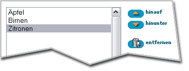
8. Speichern Sie das Menü durch Klick auf "Speichern".
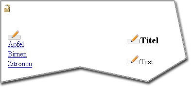
9. Klicken Sie auf einen der Menüpunkte.
10. Geben Sie Titel und Text (durch Klicken auf die jeweiligen Bleistift-Symbole) ein.
Hinweis: Sie können einen Menüpunkt auch direkt mit einem Link von einer anderen Seite aus anspringen, indem
Sie beim Link an den URL
folgendes
anhängen:
?WEBYEP_DI=x
wobei "x" für die Identifikations-Nummer des Menüeintrages steht - also zB.:
eine_seite_mit_menue.php?WEBYEP_DI=1
Sie können die Identifikations-Nummer eines Menüeintrages leicht herausfinden, indem Sie den Menüeintrag im WebBrowser einfach anklicken und so die entsprechende Unterseite aufrufen - dann sehen Sie in der URL-Zeile (Adress-Zeile) des WebBrowsers den URL der Seite mit oben erwähntem "?WEBYEP_DI=...".
In diesem Tutorial lernen Sie den Umgang mit dem WebYep Schleifen-Element.
Verwenden Sie für dieses Tutorial eine WebSite in der Sie WebYep
installiert haben!
Anlegen der Seite, Einfügen der Elemente
1. Erstellen Sie eine neue Seite "wy-schleife.php". Arbeiten Sie nicht in einem unbenannten Dokument - speicher Sie die Datei wirklich gleich unter dem Namen "wy-schleife.php".
2. Fügen Sie zwei leere Absätze ein.
3. Setzen Sie die Einfügemarke in die erste Zeile.
4. Fügen Sie aus der Objektpalette (Kategorie "WebYep") einen WebYep Anmeldeknopf ein.
5. Setzen Sie die Einfügemarke in die zweite Zeile.
6. Fügen Sie aus der Objektpalette erst ein WebYep Bild-Element
(viertes von links) und dann ein WebYep Kurztext-Element (zweites von
links) ein.
Ihre Seite sollte nun ca. so aussehen (stellen Sie sicher, dass Sie die "Unsichtbaren Elemente" alle eingeblendet haben - siehe Einleitung):
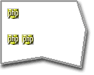
7. Die Einfügemarkte sollte nun in der zweiten Zeile stehen.
8. Selektieren Sie den ganzen Absatz, indem Sie im Tag-Selektor auf den <p>-Tag klicken:
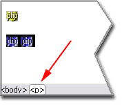
9. Drücken Sie nun auf der Tastatur die "Pfeil nach links"-Taste
(cursor left) - damit steht die Einfügemarke exakt vor dem
zweiten Absatz (siehe auch "Positionierung
im Dokument" in der Einleitung zu den Tutorials).
10. Fügen Sie nun aus der Objektpalette das WebYep Schleife/Start-Element
ein (drittes von rechts).
11. Setzen Sie nun die Einfügemarke exakt nach den Absatz
(mit der vorhin beschriebenen Methode).
12. Fügen Sie nun aus der Objektpalette das WebYep Schleife/Ende-Element
ein (zweites Element von rechts in der Palette).
Ihre Seite sollte nun ca. so aussehen:
1. Klicken Sie auf das WebYep Element in der zweiten Zeile (das Schleife/Start-Element)
2. Geben Sie im Eigenschaftsfenster als Bezeichnung "Angebote" ein.
3. Klicken Sie auf das linke WebYep Element in der dritten Zeile (das Bild-Element).
4. Geben Sie im Eigenschaftsfenster als Bildnamen "Foto" ein.
Geben Sie als HTML-Attribute folgendes ein:
align="left"
5. Klicken Sie auf das rechte WebYep Element in der dritten Zeile (das
Kurztext-Element).
6. Geben Sie im Eigenschaftsfenster als Feldnamen "Text" ein.
Testen der Seite
Stellen Sie sicher, dass Sie den webyep-system Ordner auch zum WebServer übertragen und WebYep aktiviert haben (siehe "Installation").
1. Überspielen Sie die Seite auf den WebServer (Upload per FTP).
2. Rufen Sie die Seite im WebBrowser auf, indem Sie den entsprechenden URL eingeben - z.B:
http://www.meinewebsite.com/wy-schleife.php
3. Klicken Sie auf das Schloss-Symbol (den WebYep-Anmeldeknopf).
4. Geben Sie im erscheinenden Fenster den Benutzernamen und das Kennwort ein, dass Sie bei der Installation von WebYep in der Datei konfiguration.php (im webyep-system Ordner) angegeben haben - von Haus aus lautet der Benutzername "admin" und das Kennwort ist leer.
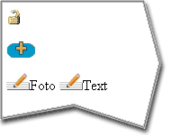
5. Klicken Sie auf die erscheinenden Bleistift-Symbole (die Editieren-Knöpfe), um ein Foto hinaufzuladen und einen Text einzugeben.
6. Klicken Sie auf das "+"-Symbol, um Schleifen-Blöcke hinzuzufügen.
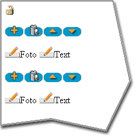
Klicken Sie das Mülleimer-Symbol um ganze Schleifen-Blöcke zu löschen,
die "Pfeil hinauf"/"Pfeil hinunter"-Symbole um die Reihenfolge der Blöcke
zu ändern.
In diesem Tutorial enthält die Schleife nur WebYep Elemente. Das
WebYep Schleifen-Element kann aber grundsätzlich beliebigen Inhalt
haben: Jeglichen HTML-Code (Text, Bilder oder auch Tabellen) und WebYep
Elemente.
Reference
Referenz
WebYep Elemente sind kurze PHP-Code-Fragmente, die in den HTML-Coder der Seite eingebettet werden. Im Dreamweaver® können diese über die Objektpalette in die Seiten eingefügt werden.
Aber Sie können die nötigen PHP-Code-Fragmente auch mit jedem anderen HTML-Editor manuell in Ihre Seiten einfügen – siehe dazu die Referenzen der einzelnen WebYep Elemente.
Bitte beachten Sie, dass HTML-Seiten, die WebYep-Elemente beinhalten,
die Dateiendung ".php" aufweisen müssen (nicht ".htm" oder ".html")!
Nach Installation der WebYep Dreamweaver® Extension finden Sie im Popupmenü am linken oberen Rand der Objektpalette eine neue Kategorie "WebYep":
Durch Klick auf eines der in der Objektpalette gelisteten Symbole wird
das entsprechende WebYep-Element in die Seite eingefügt:
Das eingefügte WebYep-Element wird durch ein "PHP"-Symbol in der Seite dargestellt - wenn dieses selektiert wird, werden im Eigenschaftsfenster (Menü "Fenster / Eigenschaften") die Einstellungsmöglichkeiten des WebYep-Elementes angezeigt.
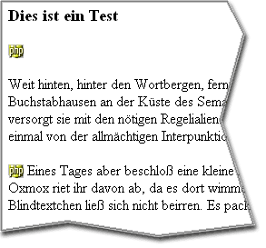 Im Dokument: Das eingefügte WebYep-Element
("PHP"-Symbol)
Das Eigenschaftsfenster mit den Einstellungsmöglichkeiten
für ein WebYep-Element
Wichtiger Hinweis: Stellen
Sie sicher, dass Dreamweaver die "Unsichtbaren-Elemente" anzeigt:
Menü "Ansicht
/ Visuelle Hilfsmittel / Unsichtbare Elemente" bzw.
in den Voreinstellungen (Menü "Bearbeiten / Voreinstellungen")
unter Kategorie "Unsichtbare Elemente" die "Server Markup
Tags" aktivieren.
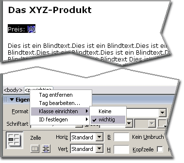 Das WebYep-Element kann mit dem umliegenden Text einfach
mit formatiert werden (vorzüglich mittels CSS).
Zusammenfassung
Im Dreamweaver® WebYep-Elemente werden durch Anklicken des gewünschten Symbols in der Objektpalette (Kategorie "WebYep") in die Seite eingefügt.
Die WebYep-Elemente werden im Dreamweaver® durch kleine "PHP"-Symbole in der Seite dargestellt.
Selektiert man dieses Symbol, so können im Eigenschaftsfenster die Einstellungen für das WebYep-Element vorgenommen werden.
Die WebYep-Elemente können gestaltet/verschoben etc. werden wie herkömmliche Texte oder Bilder
Der WebYep Init Code
Jede Seite, die WebYep Elemente beinhaltet, benötigt eine PHP-Code-Fragment, mit dem das WebYep System initialisiert wird. Dieses Code-Fragment muss vor allem anderen im Code der Seite platziert sein – nicht einmal eine Leerzeile darf dem Init Code vorangestellt sein.
Der Init Code muss auch vor der <DOCTYPE...-Direktive platziert sein. Obwohl diese Direktive eigentlich ebenfalls ganz am Beginn des Dokuments stehen muss, führt dies nicht zu Problemen, weil das PHP-Code-Fragment bereits am Server abgearbeitet (und somit "konsumiert") wird – im HTML-Code, der den Webbrowser erreicht, ist der PHP-Code nicht mehr vorhanden und somit die <DOCTYPE>-Direktive wieder ganz am Beginn des Dokuments.
Der Init Code wird automatisch in das Dokument eingefügt, wenn Sie eines der unterstützten WebDesign-Programme (wie zB. Dreamweaver) und das dazugehörige WebYep Plugin bzw. die WebYep Extension verwenden. Wenn Sie aber Ihre Seiten "von Hand" codieren oder zumindest die PHP-Code-Fragmente für die WebYep-Elemente manuell einfügen, so ist auch der WebYep Init Code manuell einzufügen.
Dies ist der WebYep Init Code:
(Bitte kopieren Sie den gesamten Code, vom ersten "<?php" bis zum letzten "?>")
<?php // WebYep init WebYepV1
/* ><table><tr><td bgcolor=white><h2>WebYep message: Error, PHP inactive</h2>
<font color=red>The PHP code in this page can not be executed!<ul>
<li>Are you launching this page directly form your harddisc (e.g. via Dreamweavers
"Preview in Browser" instead of accessing it via a webserver?</li>
<li>Has this file the correct file extension for PHP scripts?
WebYep pages must have the ".php" extension and <b>not</b> ".html" or ".htm"!</li>
</ul></font></td></tr></table><!--
*/
$webyep_sIncludePath = "./";
$iDepth = 0;
while (!file_exists($webyep_sIncludePath . "webyep-system")) {
$iDepth++;
if ($iDepth > 10) {
error_log("webyep-system folder not found!", 0);
echo "<html><head><title>WebYep</title></head><body><b>WebYep:</b> This page can not be displayed <br>Problem: The webyep-system folder was not found!</body></html>";
exit;
}
$webyep_sIncludePath = ($webyep_sIncludePath == "./") ? ("../"):("$webyep_sIncludePath../");
}
if (file_exists("${webyep_sIncludePath}webyep-system/programm")) $webyep_sIncludePath .= "webyep-system/programm";
else $webyep_sIncludePath .= "webyep-system/program";
include("$webyep_sIncludePath/webyep.php");
// -->?>
Zusammenfassung
Jede Seite, die WebYep-Elemente beinhaltet, benötigt auch den WebYep Init Code.
Der Init Code muss ganz am Beginn des Dokument-Codes platziert sein.
Wenn Sie eines der unterstützten WebDesign-Programme (wie zB. Dreamweaver) und das zugehörige Plugin bzw. die Extension für WebYep verwenden, wird der Init Code automatisch platziert.
Anmeldeknopf
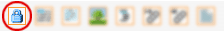 Das Symbol für den Anmelde-Knopf in der Objektpalette
Wenn die BenutzerInnen der Website eine Seite im Webbrowser bearbeiten wollen, müssen sie sich erst mittels Name und Kennwort anmelden: Durch Klick auf den an beliebiger Stelle einer Seite platzierten Anmeldeknopf, wird vom Webbrowser eine Eingabemaske für Name und Kennwort angezeigt. Erst nach erfolgreicher Überprüfung von Name und Kennwort wird die Seite im "Bearbeiten"-Modus angezeigt.
Dieses WebYep Element wird durch folgenden PHP Code repräsentiert:
Parameter der PHP Funktion webyep_logonButton(): (siehe auch "Eigenschaften des Anmeldeknopfes " weiter unten)
true/false: Ein boolscher Wert – gibt an, ob der Anmeldeknopf sichtbar sein soll. true wenn er sichtbar sein soll. false wenn nicht – der Anmeldeknopf ist dann aber immer noch vorhanden und kann angeklickt werden (wenn man weiß, wo er liegt).
Unabhängig davon ist aber immer die Eingabe von Benutzername und Kennwort erforderlich!
Zur Konfiguration von Benutzername und Kennwort siehe auch das Kapitel "WebYep konfigurieren".
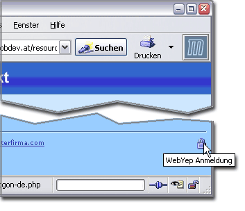 Rechts unten der WebYep-Anmeldeknopf
Der Anmeldeknopf kann, aber muss nicht auf jeder bearbeitbaren
Seite einer Website platziert werden. Ein Anmeldeknopf auf einer
Seite genügt - nach erfolgreicher Anmeldung sind alle Seiten bearbeitbar,
da die Anmeldedaten mittels Cookies im Webbrowser (verschlüsselt)
gespeichert werden. Personen, die Webseiten mittels WebYep bearbeiten
wollen (BenutzerInnen), sollten
daher in ihren Webbrowsern die Cookies nicht deaktivieren!
Technischer Hinweis: Name
und Kennwort werden in Cookies im Browser gespeichert, nicht aber auf
der Festplatte, sondern nur im Arbeitsspeicher (Session-Cookie)! Das
Kennwort wird dabei zusätzlich in Kombination mit dem aktuellen
Datum verschlüsselt, sodass selbst im Falle eines "Cookie-Diebstahls" dieses
Cookie nur einen Tag lang zum Bearbeiten der Seite berechtigen würde.
Da die Eingabe im Logon-Formular aber von den Browsern unverschlüsselt übertragen
wird (außer bei einer SSL-verschlüsselten Kommunikation via
https), ist ein "Abhören" des Kennwortes theoretisch technisch denkbar.
Das Eigenschaftsfenster für den Anmeldeknopf
sichtbar
Wenn diese Option deaktiviert wird, dann versteckt WebYep das
Schloss-Symbol - der Anmelde-Knopf ist somit unsichtbar. Die BenutzerInnen
müssen dann den Platz des Anmeldeknopfes auf der Webseite kennen (zB.
direkt unterhalb des Firmenlogos) - wenn sie mit der Maus an diese Stelle
klicken, erfolgt wie gewohnt die Anmeldung.
Das Ausblenden des Anmeldeknopfes macht das Anmelden zwar etwas zum Minensuchspiel, aber dafür ist die Wahrscheinlichkeit, dass herkömmliche BesucherInnen der Website mit dem Schloss-Symbol "herumspielen" und vielleicht versuchen das Kennwort zu erraten, weniger groß...
Kurztext
Das Symbol für das Kurztext-Element in der Objektpalette
Das Kurztext-Element ist für kurze Textpassagen wie Überschriften,
Namen oder Produktpreise gedacht. Im Gegensatz zum Text-Element sind
hier keine Formatierungen innerhalb des Textes möglich. Um den Webserver
nicht mit unnötigen Berechnungen zu belasten, sollte dieses WebYep-Element
dem Text-Element vorgezogen werden, wenn die Fähigkeiten des Text-Elementes
nicht benötigt werden oder unerwünscht sind.
Dieses WebYep Element wird durch folgenden PHP Code repräsentiert:
Parameter der PHP Funktion webyep_shortText(): (siehe auch "Eigenschaften des Kurztext-Elementes" weiter unten)
"Feldname": Ein Text – der Name für dieses Element.
true/false: Ein boolscher Wert – der Gültigkeitsbereich dieses Elementes. true wenn das Element in allen Seiten den selben Inhalt haben soll (global). false wenn es auf jeder Seite, auf der es platziert ist, andere Inhalte haben soll.
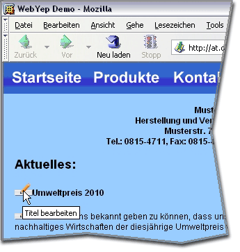 Das Kurztext-Element in Aktion - durch Klicken auf den Bearbeiten-Knopf ("Titel bearbeiten ")
öffnet sich das Kurztext-Bearbeiten-Fenster
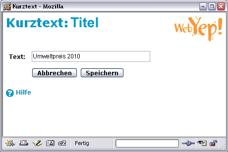 Das Kurztext-Bearbeiten-Fenster
Das Eigenschaftsfenster für das Kurztext-Element
Feldname
Eine Bezeichnung für das Kurztext-Element. Der Feldname wird in der Webseite im "Bearbeiten"-Modus angezeigt, damit die BenutzerInnen bei der Eingabe die verschiedenen Kurztext-Elemente unterscheiden können.
Inhalte
Ist hier "in diesem Dokument" eingestellt, so ist dieses Kurztext-Element
von den Kurztext-Elementen anderer Seitenunabhängig,
auch wenn diese den gleichen Feldnamen aufweisen. Wenn Sie möchten,
dass die Kurztext-Elemente mit diesem Feldnamen auf allen Seiten den gleichen
Inhalt aufweisen, ist dieses Popupmenü auf "in allen Dokumenten" zu
setzen.
Fließtext
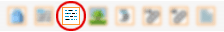 Das Symbol für das Text-Element in der Objektpalette
Das Text-Element ist für längere Textpassagen gedacht - zB. Produktbeschreibungen oder auch ganze Webseiten. Wenn Sie also eine längere Textstelle einer Webseite bearbeitbar machen wollen, können Sie dieses WebYep-Element verwenden.
Die Formatierungsmöglichkeiten des Text-Elementes sind limitiert (siehe auch weiter unten) – desshalb ist es besonders gut geeignet, wenn Sie als WebDesignerIn möglichst viel Kontrolle über das Aussehen der Texte behalten wollen.
Wenn Sie mehr Kontrolle über das Aussehen der Texte an die RedakteurInnen abgeben möchten, ist das HTML-Text-Element besser geeignet.
Dieses WebYep Element wird durch folgenden PHP Code repräsentiert:
Parameter der PHP Funktion webyep_longText(): (siehe auch "Eigenschaften des Text-Elementes" weiter unten)
"Feldname": Ein Text – der Name für dieses Element.
true/false: Ein boolscher Wert – der Gültigkeitsbereich dieses Elementes. true wenn das Element in allen Seiten den selben Inhalt haben soll (global). false wenn es auf jeder Seite, auf der es platziert ist, andere Inhalte haben soll.
"": Ein Text – nicht mehr verwendet. Geben Sie einen Leertext ("") an.
true/false: Ein boolscher Wert – gibt an, ob E-Mail-Links im Text kodiert werden sollen. true wenn E-Mail-Adressen im Text mittels JavaScript kodiert werden sollen. false wenn sie als normaler HTML Code ausgegeben werden sollen.
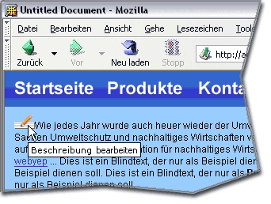 Das Text-Element in Aktion - durch Klicken
auf den Bearbeiten-Knopf ("Beschreibung bearbeiten")
öffnet sich das Text-Bearbeiten-Fenster
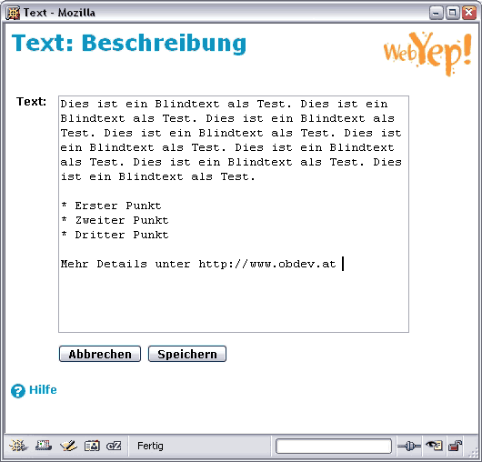 Das Text-Bearbeiten-Fenster
Text von WebYep untersucht und interpretiert wird. Bestimmte Zeichenfolgen haben
eine bestimmte Formatierung des Textes zur Folge:
bei Eingabe von
erscheint in der Seite
sieht
zB. so aus:
http://www.test.com
Der Text "http://www.test.com" als Link auf diese Website - es wird ein neues Browserfenster geöffnet! (target="_blank")
Der Text "Zur anderen Seite" als Link auf die Datei andereseite.html - es wird kein neues Browserfenster geöffnet! Es können auch vollständige URLs (inkl. "http://...") angegeben werden.
Der Text "Ein
dicker Text" in Fettschrift (mittels <strong>-Tag)
Ein dicker Text
<BEISPIEL Ein Text in spezieller Form>
Der Text "Ein Text in spezieller Form" in dem CSS-Stil "BEISPIEL" formatiert (mittels <span class="BEISPIEL">).
Sie können in Ihren Webseiten beliebige CSS-Stile anlegen, die von den BenutzerInnen dann auf diese Art angewendet werden können.
Bitte beachten Sie aber dabei, dass die Stilnamen ausschließlich
aus Großbuchstaben bestehen!
Ein Text in spezieller Form
---
Eine horizontale
Trennlinie. Die Zeichenfolge "---" muss dazu in einer
eigenen Zeile stehen!
* Erster Listenpunkt
** Ein Unterpunkt
* Zweiter Listenpunkt mit einem langen Text
* Dritter Listenpunkt
Durch Voranstellen
eines oder mehrerer Sterne (oder des Listen-Symbols) werden die Zeilen als Liste
formatiert. Statt dem Punkt-Symbol kann bei der Anzeige auch ein
Bild (zB. GIF oder JPG)
verwendet werden - siehe "Listenformatierung" weiter
unten.
Erster Listenpunkt
Ein Unterpunkt
Zweiter Listenpunkt mit einem langen Text
Dritter Listenpunkt
+ Erster Listenpunkt
++ Ein Unterpunkt
+ Zweiter Listenpunkt mit einem langen Text
+ Dritter Listenpunkt
Durch Voranstellen eines oder mehrerer Plus-Zeichen werden die Zeilen als Aufzählungs-Liste formatiert. Welche Art der Numerierung verwendet wird, kann über entsprechende CSS-Stile für den <ol>- und <li>-Tag im Stylesheet der Seite beeinflusst werden - siehe "Listenformatierung" weiter unten.
Erster Listenpunkt
Ein Unterpunkt
Zweiter Listenpunkt mit einem langen Text
Dritter Listenpunkt
aaa | bbb | ccc
111 | 222 | 333
Durch verwenden
des "|"-Symbols (links unten auf der Tastatur neben
dem "Y", dabei AltGr gedrückt halten), können
einfache Tabellen erzeugt werden. Das "|"-Symbol dient
dabei als Spalten-Trenner.
Das Aussehen der Tabelle muss durch entsprechende CSS-Stile
festgelegt werden - siehe "Tabellenformatierung" weiter unten.
aaa
bbb
ccc
111
222
333
Die Formatierungsnotation "<BEISPIEL Ein Text in
spezieller Form>" setzt voraus, dass Sie in
der Seite einen CSS-Stil namens ".BEISPIEL" definiert haben! Wichtig ist dabei, dass der
Stilname nur aus Großbuchstaben bestehen darf!
Platzierung des Text-Elementes
Beachten Sie bitte, dass das Text-Element außer Text auch diversen
HTML-Code generiert (wie horizontale Linien oder Listen – siehe
nächster Absatz).
Daher ist es wichtig innerhalb welches HTML-Tags sie das Text-Element
platzieren!
Am sichersten ist es, wenn Sie es in einen <DIV>-Tag platzieren.
Problematisch kann hingegen zB. das Setzen in einen <P>-Tag (Absatz)
werden, da Listen (<UL>) oder Linien (<HR>) in einem Absatz laut
HTML-Spezifikation
nicht erlaubt sind.
Um zu ermitteln, innerhalb welchen Tags sich ein WebYep Text-Element
befindet, selektieren Sie es im Dreamweaver und betrachten Sie dann den
Tag-Selektor (am linken unteren Fensterrand): Die Reihe von dort gelisteten
Tags gibt an, in welche Tags das Element eingebettet ist. Lautet der
letzte in der Reihe <p>, so sollten Sie diesen mit der rechten Maustaste
anklicken, "Tag bearbeiten" wählen und aus dem <p> ein <div> machen.
Listen (Bullet Lists) werden von WebYep durch die HTML-Tags <ul> und
<li> realisiert. Somit kann durch Erstellen entsprechender CSS-Stile
das Aussehen dieser Listen wie gewohnt beeinflusst werden.
So können Sie zum Beispiel durch den Stil:
ul { list-style-position: outside; list-style-image:
url(bullet.gif); }
eine Grafik (bullet.gif) als Symbol für die Listenpunkte definieren.
Sie können
einen derartigen Stil im Dreamweaver einfach erzeugen - legen Sie einen
neuen
Stil an:
Selektor-Typ: Tag
Tag: ul
und vergeben Sie in der Kategorie "Liste" die gewünschten
Eigenschaften (Listenpunkt-Bild, Position, etc.)
Wenn Sie mit dem Stil nicht alle Listen in der Seite sondern nur die
im Text-Element beeinflussen möchten, stellen Sie dass Text-Element
einfach in einen <div>-Tag, geben diesem eine CSS-Klasse (class="klassenname")
und ändern den Namen des obigen Stils von "ul" in ".klassenname
ul".
Um nur Listenpunkte einer bestimmten Ebene (Einrückung) zu beeinflussen, muss bei der Stildefinition nur der Tag-Name (das "ul") entsprechend oft wiederholt werden:
.klassenname ul ul { .....; }
beeinflusst beispielsweise nur Punkte der zweiten Ebene und tiefer, nicht aber die Haupt-Punkte.
Um die mittels "+" erzeugten Aufzählungslisten zu beeinflussen, gilt obiges entsprechend für den <ol>-Tag statt den <ul>-Tag.
Wenn Sie mit den Stilen nicht alle Tabellen in der Seite sondern nur
die im Text-Element beeinflussen möchten, stellen Sie dass Text-Element
einfach
in einen <div>-Tag, geben diesem eine CSS-Klasse (class="klassenname")
und ändern die Namen der obigen Stile von "table"
in ".klassenname
table" bzw. von "td"
in ".klassenname
td".
Eigenschaften des Text-Elementes
Das Eigenschaftsfenster für das Text-Element
Feldname
Eine Bezeichnung für das Text-Element. Der Feldname wird in der Webseite im "Bearbeiten"-Modus angezeigt, damit die BenutzerInnen bei der Eingabe die verschiedenen Text-Elemente unterscheiden können.
Inhalte
Ist hier "in diesem Dokument" eingestellt, so ist dieses
Text-Element von den Text-Elementen anderer Seitenunabhängig,
auch wenn diese den gleichen Feldnamen aufweisen. Wenn Sie möchten,
dass die Text-Elemente mit diesem Feldnamen auf allen Seiten den gleichen
Inhalt aufweisen, ist dieses Popupmenü auf "in allen Dokumenten" zu
setzen.
E-Mail-Adressen, die von den BenutzerInnen in ein WebYep-Text-Element
eingegeben werden, zeigt WebYep als E-Mail-Links in der Seite an.
Dies könnte (zB. von SPAM-Spidern) dazu missbraucht werden, diese
E-Mail-Adressen zum Zwecke des Versendens von SPAMs zu sammeln.
Um das zu verhindern, können Sie diese Option auf "Ja" stellen - damit
werden die eingegebenen E-Mail-Adressen weiter als Links dargestellt,
aber mittels JavaScript verschlüsselt, sodass sie kaum
mehr missbraucht werden können.
Da diese Verschlüsselung aber auf JavaScript basiert, können die E-Mail-Adressen
bei den wenigen BesucherInnen der Website, die JavaScript deaktiviert haben, nur in der Form:
name(_AT_)adresse.com
angezeigt werden.
Bild
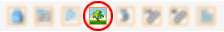 Das Symbol für das Bild-Element in der Objektpalette
Indem Sie statt eines herkömmlichen Bildes ein WebYep-Bild-Element in einer Webseite platzieren, geben Sie den BenutzerInnen der Webseite die Möglichkeit, das Bild selbst (im Webbrowser) durch eigene GIF- oder JPEG-Dateien zu ersetzen.
Dieses WebYep Element wird durch folgenden PHP Code repräsentiert:
Parameter der PHP Funktion webyep_image(): (siehe auch "Eigenschaften des Bild-Elementes" weiter unten)
"Feldname": Ein Text – der Name für dieses Element.
true/false: Ein boolscher Wert – der Gültigkeitsbereich dieses Elementes. true wenn das Element in allen Seiten den selben Inhalt haben soll (global). false wenn es auf jeder Seite, auf der es platziert ist, andere Inhalte haben soll.
'vspace="100"': Ein Text (optional) – die HTML-Attribute für den <img>-Tag.
Kann mehrere Attribut/Wert-Paare enthalten - zB.: 'width="100" align="left"'.
Vorsicht mit den Anführungszeichen: Doppelte innen (für HTML), einfache außen (für PHP)!
"eine_andere_seite.php": Ein Text (optional) – der URL einer Seite, auf die das Bild verweisen soll (Link). Kann auch ein absoluter URL sein (http://...).
Wenn ein Leertext ("") angegeben wird, ist das Bild initial kein Link, kann aber von den BenutzerInnen noch beim Editieren der Seite verlinkt werden.
"andererFrame": Ein Text (optional) – der Name eines Frames (Rahmen), der ggf. für den Link als "target" (Ziel) fungieren soll.
Geben Sie einen Leertext ("") ein, wenn Sie kein Frameset verwenden und die verlinkte Seite nicht in einem neuen Fenster geöffnet werden soll.
Geben Sie "_blank" an, um die verlinkte Seite in einem neuen Fenster zu öffnen.
70: Eine Zahl – die Breite des Bildes bzw. des Vorschaubildes, oder Null, wenn der Parameter ignoriert werden soll.
90: Eine Zahl – die Höhe des Bildes bzw. des Vorschaubildes, oder Null, wenn der Parameter ignoriert werden soll.
true/false: Ein boolscher Wert – gibt an, ob für das Bild ein Vorschaubild erzeugt werden soll. true, wenn ein Vorschaubild erzeugt werden soll. Breite bzw. Höhe des Vorschaubildes werden durch die obigen beiden Parameter definiert. Ein Klick auf das Vorschaubild im Webbrowser öffnet dann das Original-Bild in einem Popup-Fenster. false, wenn kein Vorschaubild berechnet werden soll. Die Parameter für Breite und Höhe gelten dann für das Bild selbst, das in dieser Größe dann direkt in der Seite angezeigt wird.
Bitte beachten Sie auch die Details unter "Eigenschaften des Bild-Elementes" weiter unten bzgl. Größenangaben und Vorschaubild-Erstellung!
Die Bilddateien können von den BenutzerInnen direkt im Webbrowser
zum Webserver gesendet werden. Im WebYep Bild-Ändern-Fenster wird
im
Webbrowser einfach eine GIF- oder JPEG-Datei ausgewählt und
durch Klick auf "Speichern" wird die Datei zum Webserver
gesendet und von WebYep gespeichert.
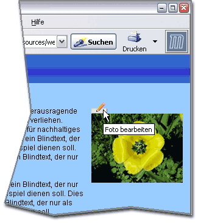 Das Bild-Element in Aktion - durch Klicken
auf den Bearbeiten-Knopf ("Foto bearbeiten")
öffnet sich das Bild-Ändern-Fenster
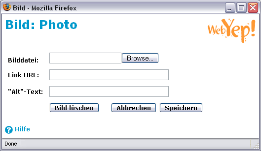 Das Bild-Ändern-Fenster
Die BenutzerInnen können im Bild-Ändern-Fenster auch den URL einer Seite angeben, auf die das Bild verlinken soll (wenn nicht ein Vorschaubild erstellt wurde oder der/die WebDesignerIn nicht schon einen URL vorgegeben hat). Zusätzlich kann auch der "Alt"-Text (der Wert für das "alt"-Attribut des <img>-Tags) angegeben werden.
Das Eigenschaftsfenster für das Bild-Element
Bildname
Ein Name für das Bild-Element. Der Bildname wird in der Webseite
im "Bearbeiten"-Modus angezeigt, damit die BenutzerInnen bei
der Eingabe die verschiedenen Bild-Elemente unterscheiden können.
Inhalte
Ist hier "in diesem Dokument" eingestellt, so ist dieses Bild-Element
von den Bild-Elementen anderer Seitenunabhängig, auch
wenn diese den gleichen Bildnamen aufweisen. Wenn Sie möchten,
dass die Bild-Elemente mit diesem Bildnamen auf allen Seiten den gleichen
Inhalt aufweisen, ist dieses Popupmenü auf "in allen Dokumenten" zu
setzen.
Vorschaubild
Ist diese Option aktiviert, dann wird ein Vorschaubild berechnet, dass anstelle des Originals in der Seite dargestellt wird. Die Größe des Vorschaubildes wird durch die Eigenschaften Höhe und/oder Breite bestimmt. Ein Klick auf dieses Vorschaubild im Webbrowser öffnet dann das Originalbild ein einem Popup-Fenster.
Ist die Option nicht aktiviert, so wird kein Vorschaubild berechnet und stattdessen das Originalbild auf die durch Höhe und/oder Breite definierte Größe verkleinert (wenn einer dieser Eigenschaften angegeben werden). Ein Klick auf das Bild im Webbrowser öffnet dann auch kein Popup-Fenster.
Breite / Höhe
Gibt die Breite bzw. Höhe des Bildes oder des Vorschaubildes an (siehe Eigenschaft "Vorschaubild"). Wenn keine Größenänderung am hochgeladenen Bild vorgenommen werden soll, können diese Eigenschaften leer gelassen werden.
Wenn eine dieser Eigenschaften angegeben wird, sorgt WebYep dafür, dass das Bild (bzw. das Vorschaubild) die angegebene Breite oder Höhe nicht überschreitet.
Wenn beide Eigenschaften angegeben werden, wird das verkleinerte Bild (bzw. Vorschaubild) weder die angegebene Höhe noch die angegebene Breite überschreiten.
Das Seitenverhältnis des Bildes bleibt dabei immer unangetastet.
Hinweis: Die Größenänderung (Verkleinerung) des Bildes kann nur durchgeführt werden, wenn am Webserver die PHP-Erweiterung "GD" installiert ist. Wenn nicht, so wird im Bild-Ändern-Fenster ein Warnhinweis angezeigt und das Bild wird nur in den entsprechenden Dimensionen angezeigt aber nicht tatsächlich umgerechnet (die Datenmenge bleibt also unverändert).
HTML-Attribute
Hier können Sie alle für den HTML <img>-Tag zulässigen Attribute angeben - diese werden dann zum <img>-Tag des Bild-Elementes hinzugefügt.
Beispiel: align="left" hspace="20"
Dadurch würde der nachfolgende Text das links stehende Bild umfließen und der horizontale Abstand zum umfließenden Text wäre 20 Pixel.
Seite (URL)
Der URL (bzw. Dateiname) einer Seite, auf die beim Klick auf dieses
Bild verwiesen werden soll. Dadurch wird dieses Bild-Element zum Link.
Bei Verwendung dieser Option für Bild-Elemente die sich in einer Schleife
(WebYep-Schleifen-Element)
befinden (um mehrere Bilder zB. untereinander darzustellen), verhält
sich der Bild-Link dann wie ein WebYep-Menü-Element: Die Seite auf die
verwiesen wird kann unterschiedliche Inhalte aufweisen, je nachdem welches
der Bilder in der Schleife angeklickt wurde. So kann mit Schleife und
Bild ein grafisches Menü aufgebaut werden.
Ziel (frame) - bei Verwendungen von Rahmen (target frame)
Wenn die unter der Eigenschaft "Seite (URL)" angegebene Seite
beim Klick auf das Bild in einem anderen Rahmen dargestellt
werden soll, ist bei der Eigenschaft "Ziel (frame)" der Name
des betreffenden Rahmens anzugeben.
Datei-Download
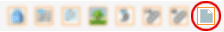 Das Symbol für das Datei-Download-Element
in der Objektpalette
Das Datei-Download-Element dient dazu, beliebige Dokumente in einer
Webseite zum Download (Herunterladen) bereitzustellen. Das bereitgestellte
Dokument wird durch einen Link (den Dateinamen) in der Seite zum Download
angeboten.
Dieses WebYep Element wird durch folgenden PHP Code repräsentiert:
Parameter der PHP Funktion webyep_attachment(): (siehe auch "Eigenschaften des Datei-Download-Elementes" weiter unten)
"Feldname": Ein Text, der Name für dieses Element.
Bei einigen Dateitypen (zB. PDF-Dokumenten) versuchen manche Browser
das Dokument direkt im Browserfenster darzustellen, statt es herunterzuladen.
WebYep verhindert dies soweit möglich, damit die Dateien unabhängig von
der Plugin-Ausstattung des Browser wirklich heruntergeladen und
nicht angezeigt werden. Leider halten sich nicht alle Browser (zB. Safari
bis mind. Version 1.2.3) an die beteiligten Internet-Standards und so
kann es manchmal doch dazu kommen, dass das Dokument im Browser angezeigt wird.
Dateigröße
Die Größe der Datei ist durch zwei Faktoren begrenzt:
1. Die PHP-Konfiguration des Webspace-Providers. Hier kann ein Größenlimit
für den Datei-Upload konfiguriert werden (üblicherweise mind. 2MB). Dieses
Limit wird zur Information im Datei-Download-Bearbeiten-Fenster angezeigt
(siehe
unten).
2. Die Geschwindigkeit der Internet-Verbindung. Dauert ein Upload einer
Datei aufgrund ihrer Größe und/oder der geringen Geschwindigkeit der
Internet-Verbindung zu lange,
so kann es zum Abbruch des Uploads (nicht des Downloads!) kommen. Das
Problem tritt also beim Bereitstellen der Datei durch den/die BenutzerIn
auf - nicht beim Herunterladen durch den/die BesucherIn der Website.
Hier können keine genauen Angaben gemacht werden - aber im Allgemeinen
sollten Dateien kleiner 2MB keine Probleme bereiten.
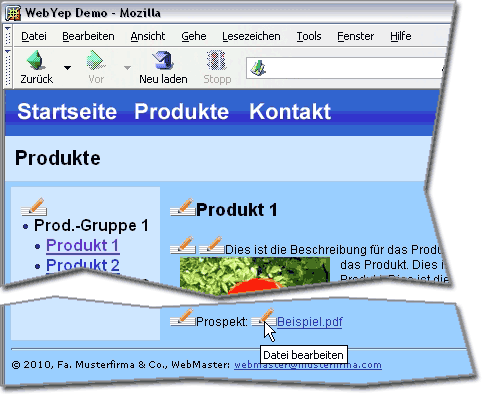 Das Datei-Download-Element in Aktion.
Durch
Klicken auf den Bearbeiten-Knopf ("Datei bearbeiten")
öffnet sich das Datei-Download-Bearbeiten-Fenster
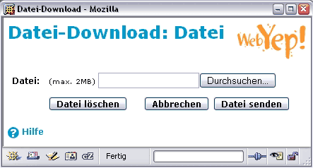 Das Datei-Download-Bearbeiten-Fenster
Eigenschaften des Datei-Download-Elementes
Das Eigenschaftsfenster für das Datei-Download-Element
Feldname
Eine Bezeichnung für das Datei-Download-Element. Der Feldname
wird in der Webseite im "Bearbeiten"-Modus angezeigt, damit
die BenutzerInnen bei der Eingabe die verschiedenen Datei-Download-Elemente
unterscheiden können.
Als Link für den Download (auf den die BesucherInnen klicken können,
um die Datei herunterzuladen) wird nicht diese Bezeichnung angezeigt,
sondern der tatsächliche Dateiname.
Menü
Das Symbol für das Menü-Element in der Objektpalette
Um eine WebYep-Seite - wie zB. eine Produktinfoseite - mehrfach verwenden
zu können (also zB. zur Präsentation mehrerer Produkte), wird
das WebYep-Menü-Element eingesetzt. Dadurch muss nicht für
jedes Produkt eine eigene HTML-Seite erstellt werden - es genügt
eine Seite, für die WebYep mit Hilfe des Menü-Elementes mehrere
sogenannte "Instanzen" erzeugt. Somit kann die selbe WebYep-Seite
mit verschiedenen Inhalten (für verschiedene Produkte) angefüllt
werden und mit dem Menü-Element wird dann ausgewählt, welche "Instanz" der
Seite, also mit den Inhalten welches Produktes, jeweils angezeigt werden
soll.
Dieses WebYep Element wird durch folgenden PHP Code repräsentiert:
Parameter der PHP Funktion webyep_menu(): (siehe auch "Eigenschaften des Menü-Elementes" weiter unten)
"Feldname": Ein Text – der Name für dieses Element.
true/false: Ein boolscher Wert – der Gültigkeitsbereich dieses Elementes. true wenn das Element in allen Seiten den selben Inhalt haben soll (global). false wenn es auf jeder Seite, auf der es platziert ist, andere Inhalte haben soll.
"die_seite.php": Ein Text– der URL der Seite, auf welche die Menüpunkte verweisen sollen.
"einFrame": Ein Text (optional) – der Name eines Frames (Rahmen), der für die Links der Menüpunkte als "target" (Ziel) fungieren soll.
Geben Sie einen Leertext ("") an, wenn Sie kein Frameset verwenden.
"": Ein Text – nicht mehr verwendet. Geben Sie einen Leertext ("") an.
"": Ein Text – nicht mehr verwendet. Geben Sie einen Leertext ("") an.
Die Menüpunkte können von den BenutzerInnen direkt im Webbrowser (im Menü-Bearbeiten-Fenster) verändert, hinzugefügt, gelöscht werden und sie können auch die Reihenfolge der Menüpunkte festlegen.
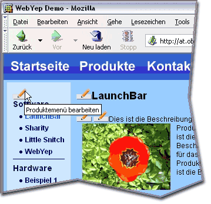 Das Menü-Element in Aktion - durch Klicken auf den Bearbeiten-Knopf ("Produktmenü bearbeiten ")
öffnet sich das Menü-Bearbeiten-Fenster
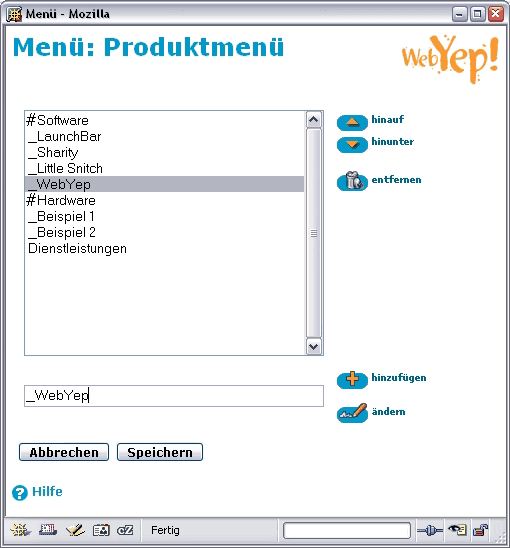 Das Menü-Bearbeiten-Fenster
Hierarchische Menüs definieren
Die BernutzerInnen können eingerückte Menüpunkte (Untermenüpunkte) erzeugen, indem Sie dem Menüeintrag ein oder mehrere Leerzeichen (oder Unterstriche "_") vornstellen. Sie können auch Untermenütitel erzeugen (die üblicherweise ein Untermenü einleiten), indem sie einem Menüeintrag eine Raute ("#") vornstellen.
Ein typisches hierarchisches Menü könnte also folgendermaßen aussehen:
Ein WebYep Menü wird durch die HTML Tags <ul> und <li>, also eine Aufzählungsliste, repräsentiert. Untermenüzweige werden durch Verschachteln solcher Listen generiert. Diese Untermenüs können dynamisch auf- und zugeklappt werden, indem auf einen Untermenütitel geklickt wird, wenn in der WebYep Konfiguration (konfiguration.php) die Verwendung von JavaScript aktiviert ist (was die Standardeinstellung ist):
$webyep_sMenuType = "listJS";
Tragen Sie hier den Wert "list" ein, um nur statische Menüs ohne JavaScript zu erzeugen.
Beachten Sie, dass das Menü-Element JavaScript im "listJS"-Modus lediglich defensiv einsetzt: Wenn JavaScript nicht zur Verfügung steht, wird automatisch ein statisches Menü (in dem alle Menübäume eingeblendet sind) erzeugt. Dies stellt auch einen barrierefreien Zugang zum Menü sicher.
Gestalten des Menüs
WebYep vergibt beim generieren des HTML-Codes für jeden Menüeintrag einen oder mehrere CSS-Klassen, je nachdem welcher Art der Eintrag ist (normaler Menüeintrag oder Untermenütitel) bzw. in welchem Status er sich befindet (selektiert, aufgeklappt). Indem Sie in Ihrem Stylesheet oder direkt in Ihrer Seite CSS-Stile für diese Klassen definieren, können Sie das Aussehen des Menüs detailliert beeinflussen.
Liste der CSS-Klassen:
CSS Klassenname
Zugewiesen wenn....
WebYepMenuItem
der Eintrag ein normaler Menüeintrag ist (kein Untermenütitel).
WebYepMenuTitle
der Eintrag ein Untermenütitel ist.
WebYepMenuCurrentItem
der Eintrag der gerade selektierte Menüeintrag ist.
WebYepMenuTitleExpanded
der Eintrag der Titel eines Untermenüs ist, das gerade ausgeklappt ist.
WebYepMenuFirstItem
der Eintrag der erste in seinem Menüzweig ist (z.B. für Trennlinien verwendbar)
Jeder Menüeintrag besteht aus einem <li>-Tag der einen <a>-Tag (Link) enthält. Die CSS-Klassen werden beiden Tags zugewiesen. Manchmal werden auch mehr als nur eine CSS-Klasse zugewiesen. Der Titel eines ausgeklappten Untermenüs wird z.B. die beiden Klassen "WebYepMenuTitle" und "WebYepMenuTitleExpanded" zugewiesen bekommen.
Hinweis: Auf unserer Website gibt es Beispiele für die Verwendung von CSS zum Gestalten von Menüs: http://www.obdev.at/webyep/
Eine Bezeichnung für das Menü-Element. Der Menüname wird in der Webseite im "Bearbeiten"-Modus angezeigt, damit die BenutzerInnen bei der Eingabe die verschiedenen Menü-Elemente unterscheiden können.
Ist hier "in diesem Dokument" eingestellt, so ist dieses Menü von den Menüs anderer Seitenunabhängig, auch wenn diese den gleichen Menünamen aufweisen. Wenn Sie das Menü auf mehreren Seiten platzieren möchten, ist diese Einstellung auf "in allen Dokumenten" zu setzen.
Seite (URL)
Name (bzw. vollständiger URL) der Seite, die beim Klick auf einen Menüeintrag angezeigt werden soll. Meist wird das der Name der Seite sein, in der sich das Menü-Element befindet (die Seite verweist also sozusagen auf sich selbst).
Ziel (frame) - bei Verwendungen von Rahmen (target frame)
Wenn die unter der Eigenschaft "Seite (URL)" angegebene Seite beim
Klick auf einen Menüeintrag in einem anderen Rahmen dargestellt
werden soll, ist bei der Eigenschaft "Ziel (frame)" der Name des
betreffenden Rahmens anzugeben.
Hinweis: Sie können einen Menüpunkt auch direkt mit einem Link von einer anderen Seite aus anspringen, indem
Sie beim Link an den URL
folgendes
anhängen:
?WEBYEP_DI=x
wobei "x" für die Identifikations-Nummer des Menüeintrages steht - also zB.:
eine_seite_mit_menue.php?WEBYEP_DI=1
Sie können die Identifikations-Nummer eines Menüeintrages leicht herausfinden, indem Sie den Menüeintrag im WebBrowser einfach anklicken und so die entsprechende Unterseite aufrufen - dann sehen Sie in der URL-Zeile (Adress-Zeile) des WebBrowsers den URL der Seite mit oben erwähntem "?WEBYEP_DI=...".
Schleife
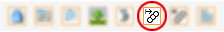 Die Symbole für das Schleifen-Element in der Objektpalette:
Links "Schleifen-Start", rechts "Schleifen-Ende"
Einen Block von Elementen auf einer Seite beliebieg oft
zu wiederholen ist der Sinn der WebYep-Schleife. Die wiederholten
Elemente können dabei WebYep-Elemente (Kurztext-Element, Bild-Element,
...), aber auch herkömmliche HTML-Elemente (Texte, Absätze,
Bilder, Tabellen, ...) sein. Alles was sich zwischen dem Schleifen-Start- und
dem Schleifen-End-Element befindet, bildet einen Block, der
einfach nach Wunsch wiederholt wird. Das Entscheidende aber ist: WebYep-Elemente
innerhalb des sich wiederholenden Blocks können bei jeder
Wiederholung andere Inhalte haben!
Das Schleifen-Start-Element wird durch folgenden PHP Code repräsentiert:
<?php foreach (WYLoopElement::aLoopIDs("Schleifenname") as $webyep_oCurrentLoop->iLoopID) { $webyep_oCurrentLoop->loopStart(true); ?> Details...
Parameter der PHP Funktion aLoopIDs(): (siehe auch "Eigenschaften des Schleifen-Elementes" weiter unten)
"Schleifenname": Ein Text – der Name für dieses Element.
Parameter der PHP Funktion loopStart(): (siehe auch "Eigenschaften des Schleifen-Elementes" weiter unten)
true/false: Ein boolscher Wert – gibt an, ob die Schleifen-Editier-Knöpfe automatisch eingebunden werden sollen. true wenn die Editier-Knöpfe automatisch am Beginn jedes Blocks eingefügt werden sollen. false wenn nicht. Sie müssen dann den PHP-Code für diese Editier-Knöpfe manuell an der gewünschten Stelle einfügen – siehe dazu auch "Autom. Edit-Knöpfe" weiter unten.
Das Schleifen-Ende-Element wird durch folgenden PHP Code repräsentiert:
<?php $webyep_oCurrentLoop->loopEnd(); } ?>
Einsatz des Schleifen-Elementes
Um das Schleifen-Element anzuwenden, erzeugen Sie in Ihrer Seite einfach einige HTML- und/oder WebYep-Elemente (den Schleifen-Inhalt). Setzen Sie dann den Schleifen-Start vor diese Elemente und das Schleifen-Ende nach diese Elemente:
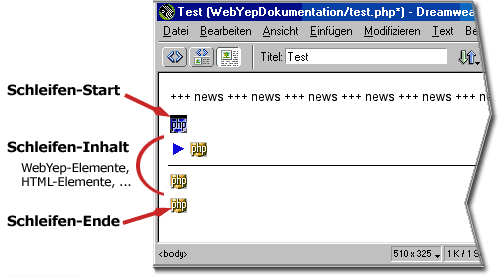
In der Website präsentiert sich die Schleife dann für die
BetrachterInnen so als würde sich der Schleifen-Block einfach mehrmals
wiederholen, jedes mal mit anderen Inhalten allerdings:
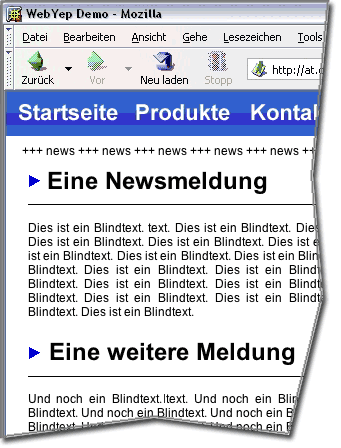
Im "Bearbeiten"-Modus im Webbrowser werden oberhalb
jedes Blocks bis zu vier Symbole eingeblendet, mit denen die Blöcke
verändert werden können:
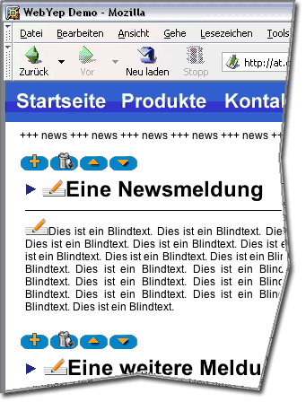
Wobei die einzelnen Symbole folgende Funktion haben:
Neuen Block darunter hinzufügen.
Block löschen
Block Richtung Anfang verschieben
Block Richtung Ende verschieben
Positionierung von Schleifen-Start und -Ende
Wenn Sie ein HTML-Element (wie einen Absatz "<p>" oder
eine Tabelle "<table>") wiederholen wollen, müssen
Sie nur darauf achten, dass Sie den Start exakt vor das Element und das
Ende exakt nach das Element setzen - siehe dazu "Positionierung
im Dokument" in der Einleitung zu den Tutorials.
In manchen Fällen kann es nötig sein, den Schleifen-Start
und das Schleifen-Ende im HTML-Code genauer zu platzieren um exakt festzulegen,
was wiederholt werden soll. Sie können die PHP-Blöcke für den
Schleifen-Start und das -Ende (jeweils durch "<?php" und "?>" eingegrenzt)
im HTML-Code beliebig verschieben.
Zur Überprüfung können Sie Ihre Seite im Webbrowser aufrufen
und im Webbrowser den HTML-Quellcode anzeigen lassen - dort sehen Sie
eindeutig, welcher HTML-Code durch das Schleifen-Element aufgrund Ihrer
Positionierung erstellt wird.
Eigenschaften des Schleifen-Start-Elementes
Das Eigenschaftsfenster für das Schleifen-Start-Element
Bezeichnung
Eine Bezeichnung für das Schleifen-Element. Wird nicht in der Seite angezeigt, ist aber für die interne Untscheidung erforderlich, wenn mehrere Schleifen auf einer Seite platziert werden.
Bitte immer einen eindeutigen Namen angeben!
Autom. Edit-Knöpfe
Die vier Symbole zum Bearbeiten der Blöcke werden im "Bearbeiten"-Modus überhalb des jeweiligen Blocks nur eingeblendet, wenn dieses Häkchen gesetzt ist (standard).
Wenn Sie in speziellen Fällen den Schleifen-Start an eine Stelle
des HTML-Codes setzen wollen, an dem die Symbole (aus HTML-syntaktischen
Gründen) nicht eingefügt werden dürfen, sollten Sie dieses
Häkchen ausschalten. Sie müssen dann aber an geeigneter Stelle
innerhalb des Blocks folgenden Code in den HTML-Code einfügen:
<?php $webyep_oCurrentLoop->showEditButtons(); ?>
Ein typisches Beispiel hierfür wäre, wenn Sie den Schleifen-Start
zwischen <table>-Tag und <tr>-Tag setzen, um nur die Tabellenzeilen
und nicht die ganze Tabelle zu wiederholen. Das Schleifen-Ende müsste
in diesem Fall zwischen </tr>-Tag und </table>-Tag gesetzt
werden. Innerhalb einer der Tabellenzellen müsste dann obiges Code-Fragment
platziert werden.
Eigenschaften des Schleifen-Ende-Elementes
Das Schleifen-Ende-Element hat keine einstellbaren Eigenschaften.